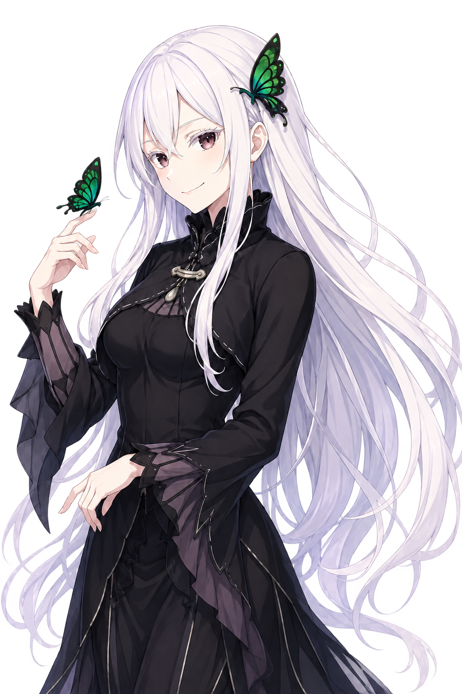

DENTRO DEL SANTUARIOPERSONAJE N.º 01 ↗
エキドナ
ECHIDNA
LA BRUJA DE LA AVARICIA
Su curiosidad no tiene fondo.
Una taza de té le basta para empezar una conversación. Echidna observa, pregunta y sonríe; detrás de sus modales delicados, desea comprender absolutamente todo.
El conocimiento es su tesoro.
Su avaricia no busca oro: Echidna quiere conocer cada fenómeno del mundo. Para ella, una respuesta siempre deja espacio para otra pregunta.
01 / 04
Todavía queda sitio en la mesa.
Echidna espera junto a la tetera. Una visita, una taza y algo nuevo que descubrir. El té parece una buena manera de empezar.
0 tazas
RE:ZERO / MAAYA SAKAMOTO

nunca suficiente té.
EN EL SALÓN
01 / 03
La siguiente pregunta podría cambiarlo todo.